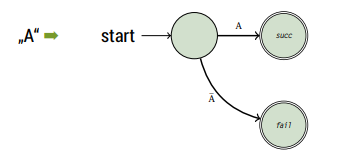
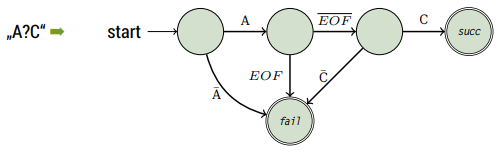
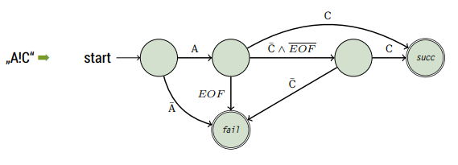
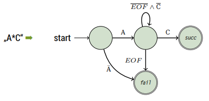
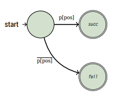
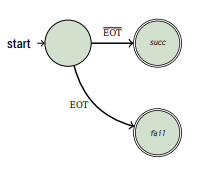

This lecture directly builds on lecture 18 so make sure to be in the picture about what we did there.
Text Search
In lecture 18 we ended with the pseudocode implementation of our search algorithm and now we want to implement it in C. As a refresher here's the pseudocode once again:
// str is file/text buffer and p is search string
Require: str and p is text, length(str) > length(p)
Ensure: returns index of first appearance of p in str
procedure SIMPLE-SEARCH(str, p)
pos = 1
while pos < length(str) - length(p) do
j = 1
while ((j <= length(p)) and (str[pos+j-1]) = p[j]) do
if j = length(p) then // found 1st occ of search string
return pos
endif
j = j+1
end while
pos = pos + 1
end while
return "not found"
end procedure
As you can see in the line if j = length(p) then ... we also need a function that determines the length of a string. There's one in the standard library but we'll write our own (same as for the presentResult function in lecture 18!):
int length(const char* str) {
int len = 0;
if (str == NULL) return 0;
while (str[len] != '\0') {
++len;
}
return len;
}
Now the algorithm in C looks pretty similar to the pseudocode however we have to account for the fact that indices begin at 0 and also do some condition checking:
int search (const char* p, const char* str, size_t tlen) {
size_t plen = length(p);
if (plen > tlen) return -1; // abort if search string is longer than text
for (size_t pos = 0; pos < tlen; ++pos) { // iterate over chars in text
size_t j = 0;
while ((j < plen) && (str[pos+j] == p[j])) { // increment j as long as chars in the search string and text match
if (j == plen - 1) { // when j is equal to plen - 1 all characters matched
return pos; //found the string (1st occurence)
}
++j;
}
}
}
Let's examine the above implementation/algorithm:
- we have two nested loops
- the outer loop runs through all \(n\) elements in our text
str - the inner loop runs through \(m\) elements in the search string
p - our upper boundary is therefore \(\mathcal{O} (m*n)\)
- the lower boundary is \(\mathcal{O} (m)\) (text begins with searchstring)
- the outer loop runs through all \(n\) elements in our text
Let's look at more efficient approaches!
Boyer-Moore Algorithm
Wikipedia: The Boyer–Moore string-search algorithm is an efficient string-searching algorithm that is the standard benchmark for practical string-search literature. It was developed by Robert S. Boyer and J Strother Moore in 1977.
The algorithm preprocesses the string being searched for (the pattern), but not the string being searched in (the text). It is thus well-suited for applications in which the pattern is much shorter than the text or where it persists across multiple searches.
The Boyer-Moore algorithm uses information gathered during the preprocess step to skip sections of the text, resulting in a lower constant factor than many other string search algorithms. In general, the algorithm runs faster as the pattern length increases.
The key features of the algorithm are to match on the tail of the pattern rather than the head, and to skip along the text in jumps of multiple characters rather than searching every single character in the text.
The key insight in this algorithm is that if the end of the pattern is compared to the text, then jumps along the text can be made rather than checking every character of the text. The reason that this works is that in lining up the pattern against the text, the last character of the pattern is compared to the character in the text. If the characters do not match, there is no need to continue searching backwards along the text. If the character in the text does not match any of the characters in the pattern, then the next character in the text to check is located n characters farther along the text, where n is the length of the pattern.
If the character in the text is in the pattern, then a partial shift of the pattern along the text is done to line up along the matching character and the process is repeated. Jumping along the text to make comparisons rather than checking every character in the text decreases the number of comparisons that have to be made, which is the key to the efficiency of the algorithm.
A shift is calculated by applying two rules: the bad character rule and the good suffix rule. The actual shifting offset is the maximum of the shifts calculated by these rules.
-
They Bad Character Rule (T=Text, P=Pattern)
The bad-character rule considers the character in
Tat which the comparison process failed (assuming such a failure occurred). The next occurrence of that character to the left inPis found, and a shift which brings that occurrence in line with the mismatched occurrence inTis proposed. If the mismatched character does not occur to the left inP, a shift is proposed that moves the entirety ofPpast the point of mismatchFor the Good Suffix Rule you should study the wikipedia section here as well as the slides :D On slide 35/36 (chapter 10) there is the code for a disttable and the adapted C search code.
Wildcards
Let's extend the problem to also allow for wildcards in our search string:
-
?match exactly one character -
!match one or no character -
*match arbitrary characters (0,1,2,…,)
For this idea we'll use state machines. The search string defines a regular grammar and the state machine gets into an accept state when a matching (according to the grammmar) character/expression (Ausdruck) is found in the text.
Since every search string can be different the state machine has to generated at run time! It exists of other generic state machines (generische Teilautomaten). From the starting the state the state machine goes into one of the end states:
- (part) success
swhen a character is found → accept -
failure
fwhen nothing was found
This is how such statement machine would look like for an input of "A" without wildcards:

Now we want to formulate a state machine for the input A?C (including wildcards):

Here's the state machine for matchin A!C:

And finally the state machine for matching A*C:

Question/Problem: What happens when there's no normal character after a ! or * in our search string (-> instead other wildcards)
Some observations:
- a search sequence of
!'s is not critical - if the search pattern starts with
*or a!, that wildcard can be skipped - if the
*or!is followed by the end of the text, that wildcard can be skipped - if a
!or*is followed by a?then the characters can be swapped (so können beide Zeichen getauscht werden) - if a
!is followed by a*, the!can be ignored - if a
*is followed by!or another*then the second wildcard can be ignored
With the observations 2-6 transformation rules can be formulated as an algorithm.
Here is the pseudocode:
Require: str, possibly with wildcards
Ensure: returns sanitized str
repeat
while str[first] = '*' || str[first] = '!' do
remove first char from str;
end while
while str[last] = '*' || str[last] = '!' do
remove last char from str;
end while
changed = true
for all substr in str, length(substr) 2 do
if substr = '!?' then
replace substr in str with '?!'
else if sub = '*?' then
replace substr in str with '?*'
else if sub = '!*' || sub = '*!' || sub = '**' then
replace substr in str with '*'
else
changed = false;
end if
end for
until (changed = false)
Since string manipulation is easier in Python we'll take a look at the implemenation of the transformation rules in Python first:
def sanitize (str ):
changed = True
while (changed == True): # repeat as often as needed
changed = False
while (str[0] == '*') or (str[0] == '!'): # delete leading * or !
str = str[1:]
while (str[-1] == '*') or (str[-1] == '!'): # delete tailing * or !
str = str[:-1]
for i in range (0, len(str)-2):
if (str[i:i+2]== '*?') or (str[i:i+2] == '!?'):
changed = True
str = str[0:i] + '?' + str[i] + str[i+2:] # *? -> ?* and !? -> ?!
if ((str[i:i+2]== '!*') or (str[i:i+2] == '*!') or (str[i:i+2] == '**')):
changed = True
str = str[0:i] + '*' + str[i+2:] # !* or *! or ** -> *
return str
The C implemenation is a bit longer but achieves the same. You can take look at it on page 47/48 (chapter 10).
Data Structures
The state machine we constructed has to be generated at run time. A suitable data structure to represent this would be a graph since state machines are graphs (they consist of vertices and edges). The vertices in a graph are the states in the state machine and the edges are the transitions.
An adjacency matrix is unsuited since vertices and edges need to hold additional information so we use =struct=s with pointers (see Chapter 7, Slide 13).
What do we need to describe a transition?
→ a start and end state
→ a condition
Because we will associate the edges with their origin/start state we only need the target (Wir werden die Ausgangskanten den entsprechenden Zuständen zuordnen, deshalb brauchen wir nur das Ziel).
Also there just 5 conditions in our state machine:
- the character is found
- the character is not found
- the end of text is reached
- the end of text is not reached
- neither the character nor the end of text was found
Accordingly we can define a data structure and constants:
typedef enum {
MatchChar,
MatchNotChar,
MatchEOT,
MatchNotEOT,
MatchNotCharNotEOT,
NoEdge // mark edges that are not existing in our state machine
} match_t;
typedef struct {
match_t condition;
int next;
} edge_t;
We describe states with:
- designating wheather it is an end state (either
sorf) or another state - the character that refers to the state
- the transitions from that state
And because there can only be 3 transitions at max to other states we allow ourselves to possibly waste a bit of memory by allocating an array for exactly 3 edges.
typedef enum {
StateDefault,
StateSuccess,
StateFail
} statetype_t;
typedef struct {
statetype_t type;
char ch;
edge_t edge[3];
} state_t
Because we only at run-time how large our state machine needs to be (ie how many states it has) we create an anonymous array (that holds the states -> pointer) and store the index of the start state as well:
typedef struct {
state_t* state;
int initial;
} automata_t;
Now the state machine can be created from the search pattern at runtime. For that we also need a success state, a fail state and a state for every non * character in the search string. For that we allocate memory:
automata_t init_automata(const char* p) {
int snr, len; // snr = statenumber (?)
len = snr = length(p);
for (int i = len - 1; i >= 0; --i) {
if (p[i] == '*') --snr; // decrease for each '*'
}
automata_t a;
a.state = calloc(snr+2, sizeof(state_t));
/* add the elments / states to the state array
the success and fail state are always the same therefore we create constant for the indices */
enum { S_FAIL = 0, S_SUCC = 1};
// Fail
a.state[S_FAIL].type = StateFail;
a.state[S_FAIL].edge[0].condition = NoEdge;
a.state[S_FAIL].edge[1].condition = NoEdge;
a.state[S_FAIL].edge[2].condition = NoEdge;
// Success
a.state[S_SUCC].type = StateSuccess;
a.state[S_SUCC].edge[0].condition = NoEdge;
a.state[S_SUCC].edge[1].condition = NoEdge;
a.state[S_SUCC].edge[2].condition = NoEdge;
snr = 1;
for (int pos = len - 1; pos >= 0; --pos) {
switch (p[pos]) {
...
}
}
}
Let's cover the case of normal characters first. We'd have two edges. One has the character from the search string as a condition, the other has the negation of such as the condition:
// continuing the switch in the code listing above
switch (p[pos]) {
default:
++snr;
a.state[snr].ch = p[pos];
a.state[snr].type = StateDefault;
a.state[snr].edge[0].condition = MatchChar;
a.state[snr].edge[0].next = snr-1;
a.state[snr].edge[1].condition = MatchNotChar;
a.state[snr].edge[1].next = S_FAIL;
a.state[snr].edge[2].condition = NoEdge; // later conditions marked as NoEdge wont be evaluated/executed
break;
This is what the above case represents 
Onto the case for the '?' wildcard character which is similar to the state for a normal character, with the difference that the condition is End-of-Text (and its negation) because the '?' allows one arbitrary character:

case '?':
++snr;
a.state[snr].type = StateDefault;
a.state[snr].edge[0].condition = MatchNotEOT;
a.state[snr].edge[0].next = snr-1;
a.state[snr].edge[1].condition = MatchEOT;
a.state[snr].edge[1].next = S_FAIL;
a.state[snr].edge[2].condition = NoEdge; // no third edge therefore not needed/used
break;
Now the case for the '!' wildcard character. The state for '!' needs 3 edges
- one edge to the state after the next state (folgezustand des folgezustands) with the condition that the character of the next state is found (represents the optionality)
- one edge to the next state when neither the character of the next state nor EOT is matched (represents arbitrary char)
- one edge for EOT that goes to fail state
case '!':
++snr;
a.state[snr].type = StateDefault;
a.state[snr].ch = a.state[snr-1].ch; // get character from next state
a.state[snr].edge[0].condition = MatchChar;
a.state[snr].edge[0].next = a.state[snr-1].edge[0].next;
a.state[snr].edge[1].condition = MatchEOT;
a.state[snr].edge[1].next = S_FAIL;
a.state[snr].edge[2].condition = MatchNotCharNotEOT;
a.state[snr].edge[2].next = snr-1;
break;
In contrast to the previous cases, the '*' character does not create a new state. Instead the state of the next character is modified
- the condition of the edge to 'fail' is mititgated (abgeschwächt) to EOT
- a loop to itself is added, when neither the original character nor EOT are matched
case '*':
// no ++snr
a.state[snr].edge[1].condition = MatchEOT;
a.state[snr].edge[2].condition = MatchNotCharNotEOT;
a.state[snr].edge[2].next = snr;
break;
}
Finally we also need to determine the initial state of our state machine. Since we operated on the search pattern from the tail, the initial state is the state that was generated last.
switch { // switch from above
...
}
a. initial = snr;
return a;
} // close init_automata function
Now the state machine is constructed and can be used
-
Executing the State Machine
Since now we have the function to initialize the state machine, it can be executed when the search is performed. Because of the wildcards the length of the match is not known beforehand, the search needs to return two values (start and end):
typedef struct { int start; int end; } searchresult_t; searchresult_t search (automata_t, const char*, size_t);
When executing the search what basically needs to happen is that it is checked if a condition is true and then a switch to the next state needs to happen. If the state machine gets into the 'fail' or 'success' state the execution ends.
searchresult_t search ( automata_t a , const char * text , size_t tlen ) { searchresult_t res ; for (size_t pos = 0; pos < tlen; ++pos) { int snr = a.initial; size_t j = pos; while (a.state[snr].type == StateDefault) { for(int i = 0; i < 3; i++) { if (((a.state[snr].edge[i].condition == MatchChar) && (text[j] == a.state[snr].ch)) || ((a.state[snr].edge[i].condition == MatchNotChar) && (text[j] != a.state[snr].ch)) || ((a.state[snr].edge[i].condition == MatchEOT) && (text[j]== '\0')) || ((a.state[snr].edge[i].condition == MatchNotEOT) && (text[j] != '\0')) || ((a.state[snr].edge[i].condition == MatchNotCharNotEOT) && (text[j] != '\0') && (text[j] != a.state[snr].ch))) { snr = a.state[snr].edge[i].next; ++j; /* next character */ break; } } /* end for iteration over edges */ } if (a.state[snr].type == StateSuccess) { res.start = pos; res.end = j; return res ; } } /* end for iteration over text */ res.start = -1; res.end = -1; return res; }
Because of the new return value of the search function, the presentResult function (from last lecture) also needs to be adapted:
void presentResult(searchresult_t res, const char* str) { int start, prelen; start = res.start > 20 ? res.start - 20 : 0; // output beginning prelen = res.start > 20 ? 20 : res.start; // beginning of match printf("%.*s[%.*s]%.20s\n", prelen, &str[start], res.end-res.start, &str[res.start], &str[res.end]); }
Finally we can use our algorithm in the following main function:
int main (int argc, char* argv []) { FILE* file; char* text; char* pattern; automata_t automata; searchresult_t found; size_t size; /* ... error checks and file / memory ! handling as in simple search ... */ text[size]= '\0'; pattern = sanitize(argv[1]); automata = init_automata(pattern); found = search(automata, text, size); if (found.start != -1) presentResult(found, text); free(text); free(automata.state); return found.start; }
Final Reflections: Like the simple search, this algorithm has a complexity of \(\mathcal{O}(m*n)\) where
nis the size of the text andmthe max (expanded) size of the search pattern. In the worst case, when*occurs in the search pattern, the expanded length/size is the length of the text that is searched the complexity can get to \(\mathcal{O}(n^2)\). That's why in praxis there's usually an agreement upon that searches are performed line by line and that line endings are not matched (or that there's a max expansion length). Also beware that wildcard search algorithm are often not realized via this algorithm that we looked and instead with recursive functions.